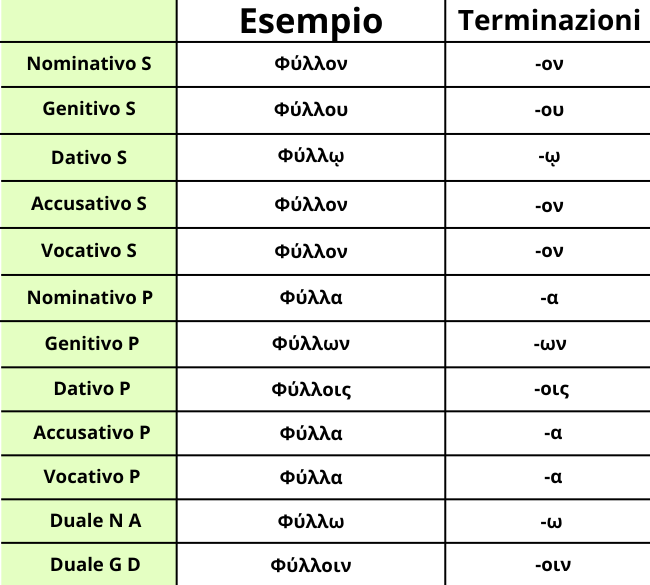

La seconda declinazione neutra condivide la vocale tematica ο, ma presenta una caratteristica fondamentale: nei neutri, nominativo, accusativo e vocativo coincidono sempre, sia al singolare che al plurale. Questo perché sono i cosidetti Casi Diretti, che si attaccano al verbo senza l'ausilio di preposizioni.
Le desinenze da Nominativo a Vocativo, da Singolare a Duale sono: -ον, -ου, -ῳ, -ον, -ν, -ω, -α, -ων, -οις, -α, -α, -οιν
Vi sono alcune caratteristiche importanti:
1). Il plurale neutro termina sempre in -α.Nominativo, accusativo e vocativo sono identici.
2). Nominativo, accusativo e vocativo sono identici.
3). Il genitivo plurale è -ων, come nel maschile.
Ricordati poi di una particolare regola grammaticale, ovvero la concordanza del neutro plurale con un verbo al singolare. Ciò accade perché il neutro al plurale esprime un valore collettivo percepito come un'unica cosa, rendendo quindi il verbo al singolare.